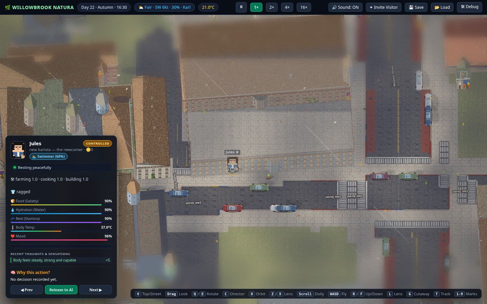
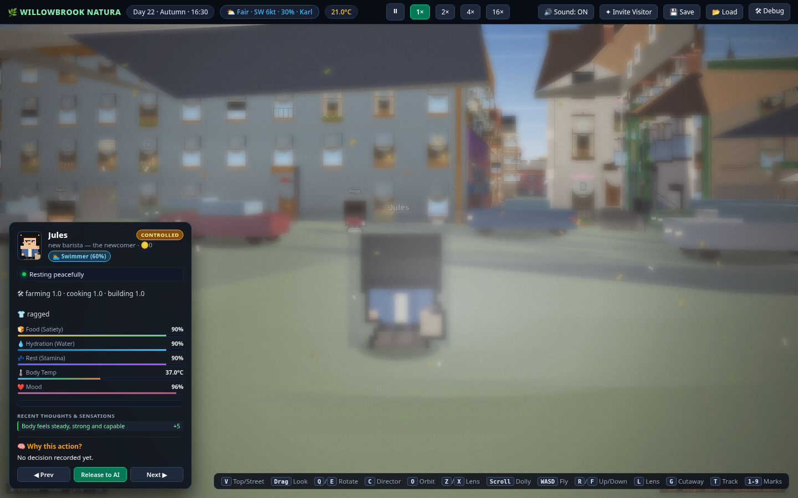

Features
A world that's already interesting before anyone spends a cent.
Every feature below is in the locked design for the first neighborhood — the Mission. Nothing here is aspirational copy.
The stage: a real San Francisco block
Real streets, fictional doors
Four to six blocks of the Mission District around Dolores Park, built on real street geometry — the same corners, the same park, the same Victorian rooflines. Street names are real; every house number is generated beyond the real block's range, so no fictional door is ever a real household's.
A living day
The neighborhood keeps real time. Residents open Mudhaus at 6 a.m., take the same walk to the park, close El Farolote at night. Weather rolls in off the fictionalized bay. Life continues at full speed whether or not anyone is watching.




The cast: eight people who can't be taken over
The main cast runs on full AI minds — memory, jobs, routines, relationships, and secrets that even the audience has to earn by watching.
Full AI minds
The eight mains think in text with persistent memory. They hold jobs, keep routines, form grudges, and remember what happened last week.
The possession ban
Nobody may possess any of the eight — not players, not the game's owner. Their storylines stay authorial. What you watch is genuinely theirs.
Real secrets
Every main carries a drama seed the audience doesn't know — a secret blog, an unpermitted tenant, an offer to sell the building. Secrets leak the way real ones do.
20 ambient neighbors
The wider crowd runs on lightweight AI — schedules and reflexes that fill the sidewalks and keep the block feeling inhabited at near-zero cost.
Watchable with zero players
The world is designed to be entertaining with an empty audience. Rent disputes, gossip, and small kindnesses are the content — players add to it, they don't produce it.
A history you can browse
A public feed and event record let you catch up on the week's drama like a serial — what happened on your street while you were away. The Archive keeps every day browsable five ways.
The request system: agency, sold by the minute
When you want to do more than watch, you file a request: a declared action with a declared duration, paid upfront in credits. Possess your own character for thirty minutes. Ask the sky for rain for two hours. Nudge an event onto the stage.
- Declared upfront. Action + duration are stated before you pay. No open-ended tabs.
- Auto-classified. Requests sort into exclusive (locks a character), compatible (runs alongside others — the best multiplayer), or queued.
- Fair ordering. First-come-first-served, with per-player and global cooldowns; surge pricing on contested resources.
- Hard cap. Credits are spent on the declared duration only — a low-balance warning, then a graceful handoff back to AI. No overruns, ever.
- Auto-refunded. Queued requests that expire before activation get their credits back.
The public request feed
Every request, approval, refund, and admin action is posted where all viewers can see it. The feed is transparency and content — half the fun is watching what other people are trying to do to the neighborhood.
Two currencies, one wall between them
Credits — the meta layer
Bought with real money or earned in small daily amounts by watching opt-in ads. Spent on requests, world changes, and creating a character. Credits are non-transferable and can never be converted back to money — there is no cash-out, by design.
Game dollars — the in-world layer
Rent, wages, groceries. A possessed character still works their shift and pays their rent like everyone else. Dollars are earned in-world only — you cannot buy your way to a paid-up lease.
The ladder: tenant → owner → landlord
The progression arc is the Mission's oldest story — get a room, hold a job, buy a place, rent one out.
Tenant
Create a character and rent housing with game dollars. Miss rent and the admin can evict — new characters aren't exempt from the sim.
Owner
Buy a unit through a listing like any other — then carry the mortgage, property tax, and HOA costs that come with it.
Landlord
Own a second unit and rent it out. Landlord standing is earned in-world and gated by reputation — never bought outright.
Run like a building, watched like a show
The landlord layer
The game's owner is the neighborhood's sole landlord and admin — and one of the eight main characters is the landlord in the story. Leases, rent, and evictions run through admin tools, never through possession, and every admin action lands on the public feed. If an admin override cancels your request, you're refunded in credits.
Anti-grief, structurally
- Cooldowns and surge pricing on world-scale actions.
- Reputation consequences that persist on characters — a landlord who evicts abusively faces the tenants' response.
- A hard wall between credits and game dollars; no gray markets.
- Daily cap on ad-earned credits.
- Requests can't target harm or humiliation — denied before they run.
Deliberately not here
Voice
No TTS, no voice acting — text minds only. Cheaper to run, and every word stays loggable.
Cash-out
No real-money trading, no redeemable currency, no cash-out. Not now, not later.
Loot boxes
No randomized purchases. Everything has a visible price.
Possession of the cast
The eight mains are off-limits to everyone — that's the contract that makes watching mean something.